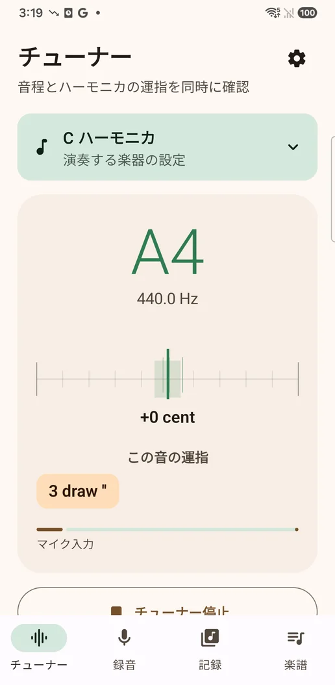
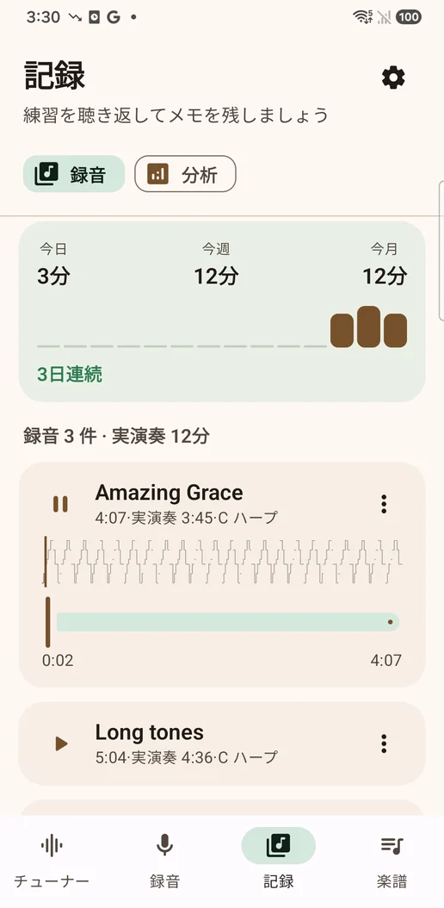
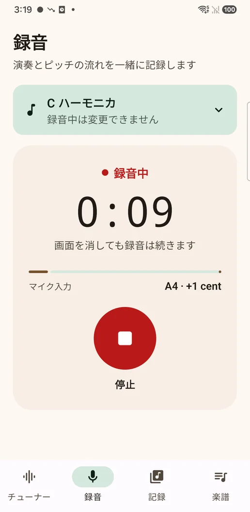
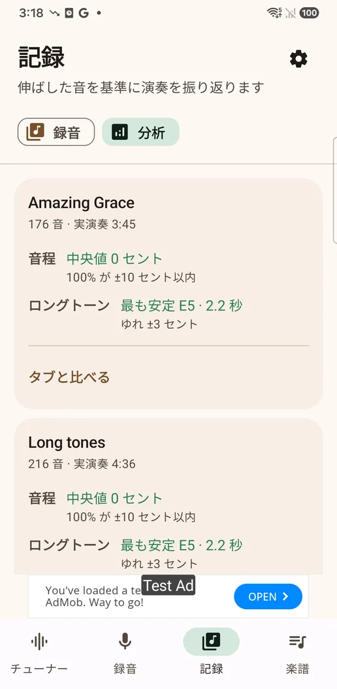
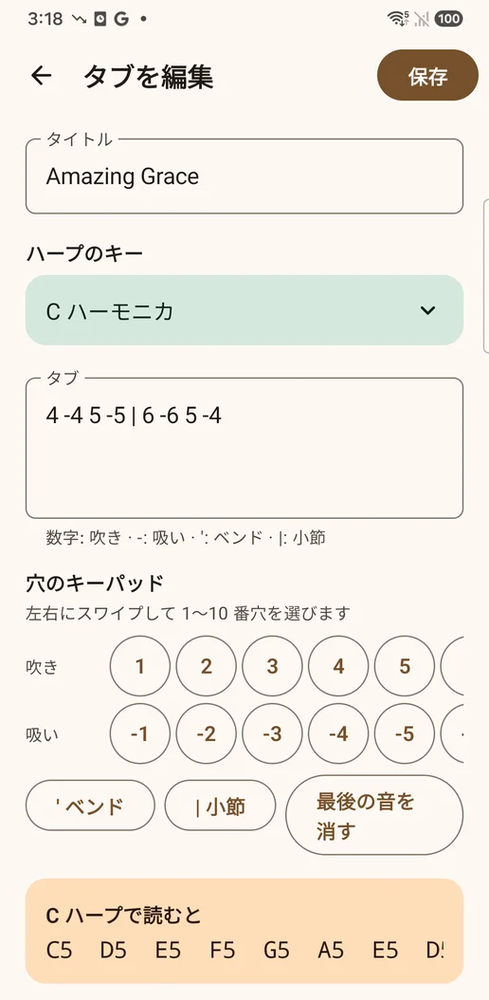
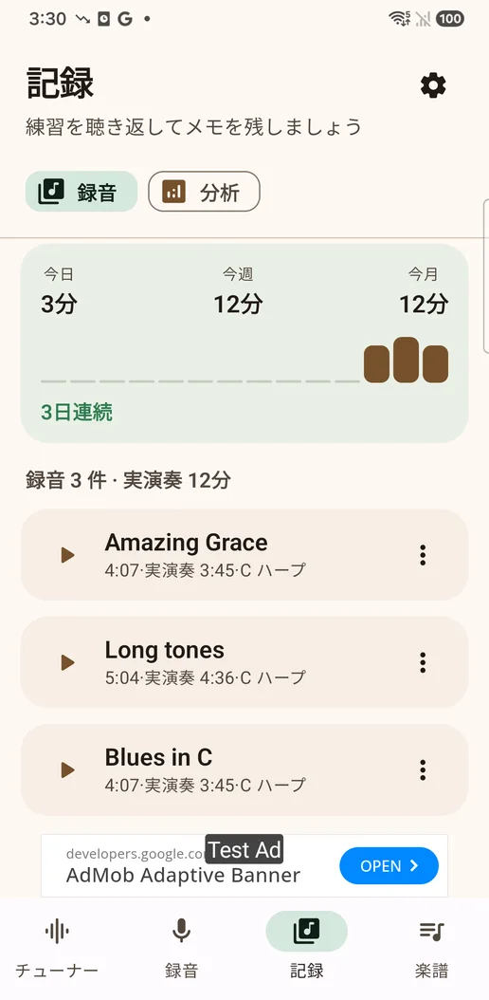

出る位置をすべて表示
CのハープのG4は2番吸いと3番吹きの両方なので、どちらも並べて出します。ベンドは演奏者が書く表記のまま（3'は一半音、3''は二半音）で、実際には半音まで下がらない位置はその旨を表示します。
10ホールハーモニカのためのチューナーと練習記録
普通のチューナーは「A4、1セント高い」で終わります。このアプリは聞き取った音を「何番穴・吹きか吸いか・ベンド何段か」に戻して見せ、画面を消しても録音を続けます。
Google Play で近日公開English · 日本語 · 한국어 · Android


音を運指に戻す
同じA4でも、Cのハープでは3番穴を吸いながら二半音ベンドする音で、キーの違うハープではまったく別の場所にあります。音名だけでは、その変換が演奏者の宿題として残ります。
CのハープのG4は2番吸いと3番吹きの両方なので、どちらも並べて出します。ベンドは演奏者が書く表記のまま（3'は一半音、3''は二半音）で、実際には半音まで下がらない位置はその旨を表示します。
自動音量調整とノイズ抑制を切って可逆のWAVで保存し、演奏しながらピッチの推移も記録します。通話が来るとそこまでを保存し、通話のあとに続けて録音します。
音程・ロングトーン・ベンドは、アタックや息ではなく伸ばした音から測ります。ベンドはベンドでしか出せない音のときだけ判定します。練習時間は実際に音を出した時間で数えます。
アプリプレビュー




録音・ピッチ記録・メモ・取り込んだ楽譜は端末に保存されます。自社サーバーはなく、これらを広告SDKに渡すこともありません。バナー広告は「記録」と「楽譜」の一覧にだけ表示され、チューナーや録音中には出ません。一度きりの購入で広告を削除できます。